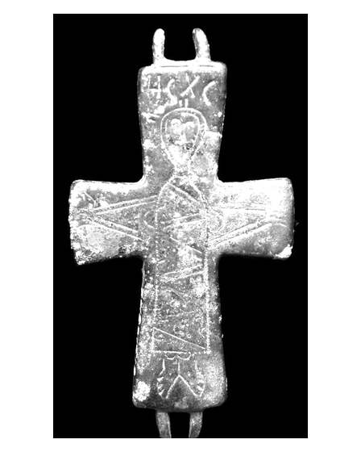

Catalog › CE-0386 · APH2017-5
Valvă izolată de encolpion din aliaj de cupru, cat. 5, Aphrodisias
sec. XI (1001–1100) · Aphrodisias, Turcia
single valve of a reliquary cross, altul; c. XI (1001–1100); found at Aphrodisias, Turcia.


Identificare
- Categorie
- Valvă izolată
- Material
- Altul
- Tehnică
- Gravare (incizie)
- Dimensiuni
- Î 83 × L 45 × Gr 3 mm
Iconografie
- Avers
- Răstignirea (Hristos în colobium)
- Descriere avers
- Valva feței, cu față netedă gravată. Toate brațele ușor lărgite. Crucea nu e figurată, dar iconografia e cea a Răstignirii, cu brațele lui Hristos întinse în părți; Hristos poartă un colobium cu mâneci largi, decorate cu un zigzag rar; deasupra capului literele Η[ησού]Σ Χ[ριστό]Σ.
- Inscripții
- Η[ησού]Σ Χ[ριστό]Σ
- Limba
- Greacă
Datare și atribuire
- Datare
- sec. XI (1001–1100)
- Centru
- Necunoscut
- Tipologie
- Pitarakis (2006), forma tip I
Descoperire
- Localitate
- Aphrodisias
- Țară
- Turcia
- Context
- Necropolă / mormânt
- Coordonate
- 37.7088° N, 28.7238° E
- Precizia locului
- Doar localitatea
Păstrare și referințe
- Nr. inventar
- 65-184
- Bibliografie
- H. Jeffery, The Archaeology of Middle Byzantine Aphrodisias, teză DPhil în arheologie clasică, University of Oxford, aprilie 2019 [Jeffery 2019], vol. 3 (Figures), Descriptive Catalogue Four: Copper Alloy Reliquary Crosses, cat. nr. 5 (paginile nu sunt numerotate în PDF; p. PDF 435), fotografie reprodusă la p. PDF 434. Publicată anterior: Pitarakis (2006), nr. 511.
- Figura
- fotografie în catalog, fără număr de figură
- Planșe
- Jeffery 2019, vol. 3, Cat. Four, p. PDF 434
- Analogii
- Pitarakis (2006), nr. 482–511.
- Observații
- Context: Cath.65.69; crucea a fost descoperită lângă cutia toracică. Publicată anterior: Pitarakis 2006, nr. 511. Autorul spune că tipul a fost produs în Asia Mică și la Constantinopol în sec. XI. Dimensiuni: L. 8,3 × l. 4,5 × gros. 0,3 cm. Material: „copper alloy” (aliaj de cupru) în sursă. Coordonate: ale localității (aproximative), nu date în sursă.
Citare: Corpus Encolpiorum, CE-0386, Valvă izolată de encolpion din aliaj de cupru, cat. 5, Aphrodisias, https://vitaliejosanu1979-ux.github.io/primul-meu-proiect/piese/APH2017-5/ (accesat 2026-10-17).